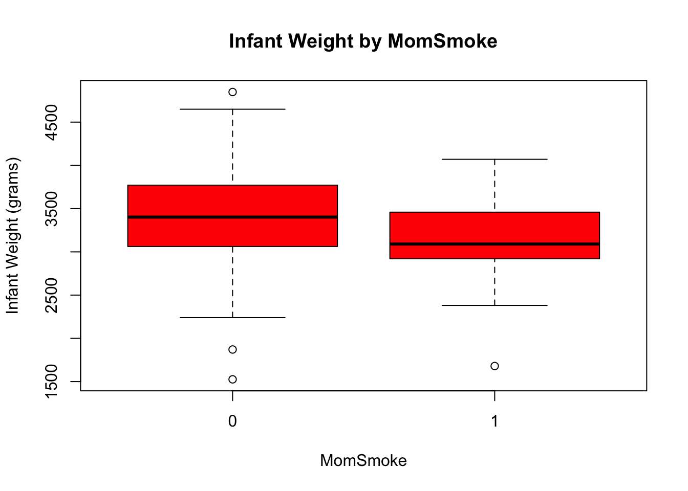
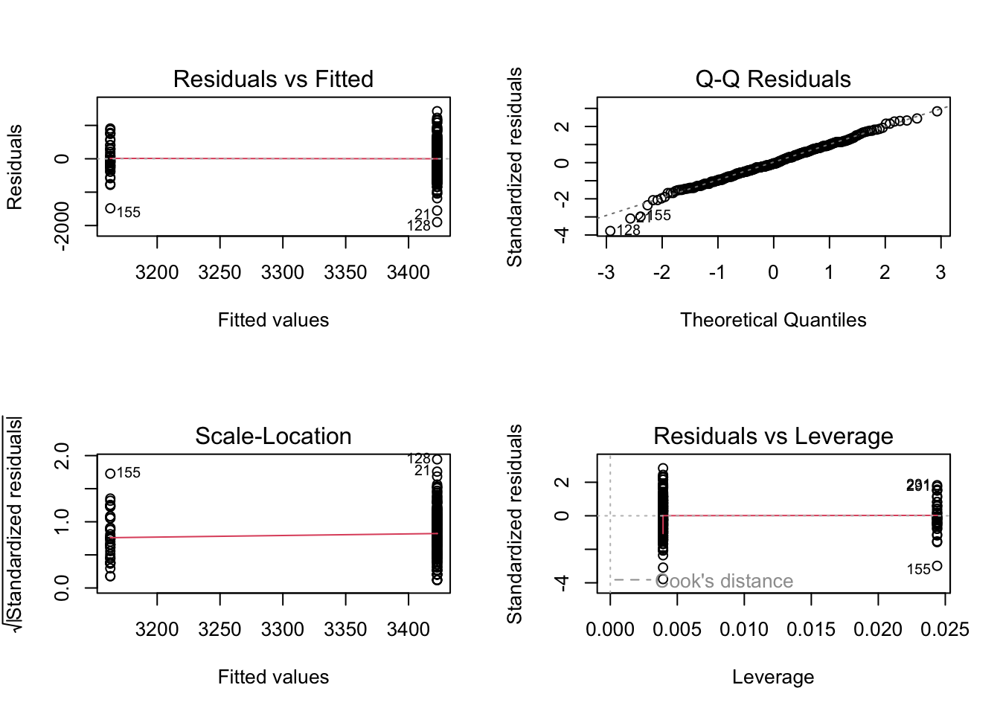
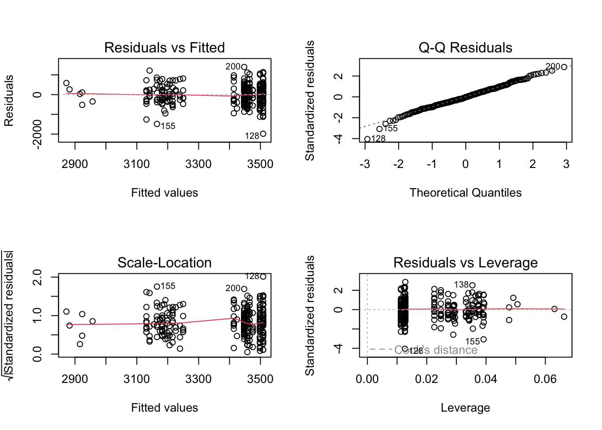

Box Plot Comments: The box plot illustrates few outliers above the maximum and below the minimum. The minimum value of the box plot is ~2100 grams, whereas the maximum value is ~4600 grams. The mean and medium values displayed on the plot are almost equal (~3400 grams), indicating low skewness; however, since the mean is larger than the median, the data is slightly skewed to the right. Finally, the box plot illustrates that the data most likely follows normal distribution.
Shapiro-Wilk normality test
data: birthweight$Weight
W = 0.99206, p-value = 0.1153
QQ-Plot & Shapiro-Wilk Normality Test Comments: The QQ-Plot illustrates a majority of the values near the red line. Since the p-value (0.1153) of the Shapiro-Wilk Normality Test is greater than the significance level (α=0.05), Weight follows normal distribution. We do not reject the null hypothesis.
1b)
Boxplot of Weight by MomSmoke
boxplot(Weight~MomSmoke,data=birthweight,main="Infant Weight by MomSmoke",xlab="MomSmoke",ylab="Infant Weight (grams)",col="red",border="black")

Boxplot Comments: The box plots illustrate that the median infant weight of non-smoking moms is greater than the median of moms who smoke. Additionally, the infant weights of non-smoking moms have a higher range of values than smoking moms. For non-smoking moms, the minimum value of the boxplot is ~2200 grams and the maximum ~4600 grams, whereas the minimum value of smoking moms is ~2400 grams and the maximum ~4000 grams.
Shapiro-Wilk normality test
data: birthweight$Weight[birthweight$MomSmoke == 1]
W = 0.96299, p-value = 0.2
Conclusion: Since the p-values of non-smoking (0.3549) and smoking moms (0.2) are greater than the significance level (α=0.05), we do not reject the null hypothesis. The data for both non-smoking and smoking moms follow normal distribution.
Exercise 2
Since both non-smoking and smoking moms follow normal distribution, we will perform a parametric hypothesis T-test to compare the mean values of the two groups.
Specify null and alternative hypothesis:
H0: The mean of non-smoking moms is equal to the mean of smoking moms.
H1: The mean of non-smoking moms is not equal to the mean of smoking moms.
We need to check equal variance to choose between the pooled t-test (equal variance) or the Satterthwaite t-test (unequal variance).
F test to compare two variances
data: Weight by MomSmoke
F = 1.0786, num df = 253, denom df = 40, p-value = 0.8009
alternative hypothesis: true ratio of variances is not equal to 1
95 percent confidence interval:
0.6421109 1.6671729
sample estimates:
ratio of variances
1.078555
Since the p-value (0.8009) is greater than the significance level (α=0.05), we do not reject the null hypothesis. The two groups have equal variance; therefore, we will perform the pooled t-test.
Two Sample t-test
data: Weight by MomSmoke
t = 3.071, df = 293, p-value = 0.002334
alternative hypothesis: true difference in means between group 0 and group 1 is not equal to 0
95 percent confidence interval:
93.37931 426.65488
sample estimates:
mean in group 0 mean in group 1
3422.724 3162.707
Conclusion: Since the p-value of the pooled t-test (0.002334) is less than the signifiance level (α=0.05), we reject the null hypothesis test. The mean of non-smoking moms is not equal to the mean of smoking moms.
Exercise 3
First, we check to see if the data is balanced/unbalanced. The table shows that our data is unbalanced.
table(birthweight$MomSmoke)
0 1
254 41
3a)
Next, we perform the Levene Test to check the homogeneity of variance (equal variance assumption). ### Levene Test
Levene's Test for Homogeneity of Variance (center = median)
Df F value Pr(>F)
group 1 0.6767 0.4114
293
Since the p-value (0.4114) of the Levene Test is greater than the significance level (α=0.05), we do not reject the null hypothesis. The equal variance assumption holds, and it is okay to perform classic ANOVA.
3b)
Classic ANOVA and Post-Hoc Test
summary(aov.momsmoke)
Df Sum Sq Mean Sq F value Pr(>F)
MomSmoke 1 2386708 2386708 9.431 0.00233 **
Residuals 293 74151291 253076
---
Signif. codes: 0 '***' 0.001 '**' 0.01 '*' 0.05 '.' 0.1 ' ' 1
Since the p-value (0.00233) of our one-way ANOVA is less than the significance level (α=0.05), we reject the null hypothesis. The mean of non-smoking moms does not equal the mean of smoking moms. These conclusions are similar to our pooled t-test conclusion in exercise 2. Using the Scheffe post-hoc test, we can also conclude that the mean infant weight of smoking moms is less than the mean of smoking moms by -260.02 grams.
This means that 3.12% of the total variation of Weight can be explained by our model.
Normality Check
par(mfrow=c(2,2))plot(aov.momsmoke)

The QQ-Plot illustrates that most of the data follows a normal distribution. The Residuals vs. Fitted graph illustrates that group 1 has less variation than group 2; however, we already verified that the equal variance assumptions holds true via the Levene test. The diagnostic plots are being presented for qualitative purposes.
Exercise 4
4a)
Backward Selection
full_model =aov(Weight ~ Black + Married + Boy + MomSmoke + Ed,data=birthweight)Anova(full_model, type=3)
Anova Table (Type III tests)
Response: Weight
Sum Sq Df F value Pr(>F)
(Intercept) 470708892 1 1936.5547 < 2.2e-16 ***
Black 2778525 1 11.4312 0.0008217 ***
Married 53455 1 0.2199 0.6394546
Boy 190845 1 0.7852 0.3763046
MomSmoke 2225578 1 9.1563 0.0027017 **
Ed 7295 1 0.0300 0.8625846
Residuals 70245819 289
---
Signif. codes: 0 '***' 0.001 '**' 0.01 '*' 0.05 '.' 0.1 ' ' 1
temp_model_1 =aov(Weight ~ Black + Married + Boy + MomSmoke,data=birthweight)Anova(temp_model_1, type=3)
Anova Table (Type III tests)
Response: Weight
Sum Sq Df F value Pr(>F)
(Intercept) 504241891 1 2081.4757 < 2.2e-16 ***
Black 2794731 1 11.5365 0.0007778 ***
Married 61146 1 0.2524 0.6157671
Boy 186656 1 0.7705 0.3807876
MomSmoke 2227433 1 9.1947 0.0026466 **
Residuals 70253114 290
---
Signif. codes: 0 '***' 0.001 '**' 0.01 '*' 0.05 '.' 0.1 ' ' 1
temp_model_2 =aov(Weight ~ Black + Boy + MomSmoke,data=birthweight)Anova(temp_model_2, type=3)
Anova Table (Type III tests)
Response: Weight
Sum Sq Df F value Pr(>F)
(Intercept) 1413353138 1 5849.2511 < 2.2e-16 ***
Black 3664133 1 15.1642 0.0001223 ***
Boy 179990 1 0.7449 0.3888071
MomSmoke 2498854 1 10.3417 0.0014471 **
Residuals 70314260 291
---
Signif. codes: 0 '***' 0.001 '**' 0.01 '*' 0.05 '.' 0.1 ' ' 1
temp_model_3 =aov(Weight ~ Black + MomSmoke,data=birthweight)Anova(temp_model_3, type=3)
Anova Table (Type III tests)
Response: Weight
Sum Sq Df F value Pr(>F)
(Intercept) 2600800716 1 10772.989 < 2.2e-16 ***
Black 3657042 1 15.148 0.0001232 ***
MomSmoke 2513301 1 10.411 0.0013954 **
Residuals 70494249 292
---
Signif. codes: 0 '***' 0.001 '**' 0.01 '*' 0.05 '.' 0.1 ' ' 1
temp_model_4 =aov(Weight ~ Black + MomSmoke + Black*MomSmoke,data=birthweight)Anova(temp_model_4, type=3)
final_model =aov(Weight ~ Black + MomSmoke,data=birthweight)Anova(final_model, type=3)
Anova Table (Type III tests)
Response: Weight
Sum Sq Df F value Pr(>F)
(Intercept) 2600800716 1 10772.989 < 2.2e-16 ***
Black 3657042 1 15.148 0.0001232 ***
MomSmoke 2513301 1 10.411 0.0013954 **
Residuals 70494249 292
---
Signif. codes: 0 '***' 0.001 '**' 0.01 '*' 0.05 '.' 0.1 ' ' 1
First, run ANOVA with the full model that includes every variable (Black, Married, Boy, MomSmoke, Ed). From those results, we will remove Ed since it had the largest p-value over the significance level (0.8625846). Next, we exclude Ed and run a new model with the remaining four variables. From those results, we will remove Married since it had the largest p-value over the significance level (0.6157671). Then, we exclude Ed/Married and run a new model with the remaining three variables. From those results, we will remove Boy since it had the largest p-value over the significance level (0.3888071). Next, we exclude Ed/Married/Boy and run a new model with the remaining two variables. From those results, the remaining variables calculated p-values are less than the significance level, so neither are excluded from our final model. Finally, we check the interaction effects based only on these two significant main effect terms. We run a new model with Black, MomSmoke, and their interaction effects. From those results, we conclude that the Black/MomSmoke interaction does not have a significant effect since the interaction’s p-value (0.8807474) is greater than the significance level (α=0.05); therefore, we exclude the interaction effect from our final model.
4b)
Final Model & R-Square
lm.final_model =lm(Weight ~ Black + MomSmoke,data=birthweight)summary(lm.final_model)$r.squared
[1] 0.07896405
This means that 7.90% of the total variation of Weight can be explained by our model (Black + MomSmoke).
Normality Assumption
par(mfrow=c(2,2))plot(full_model)

The QQ-Plot illustrates that most of the data near the line; therefore, we can assume normality of our data.
4c)
Final Model ANOVA & Post-Hoc Test
final_model =aov(Weight ~ Black + MomSmoke,data=birthweight)Anova(final_model, type=3)
Anova Table (Type III tests)
Response: Weight
Sum Sq Df F value Pr(>F)
(Intercept) 2600800716 1 10772.989 < 2.2e-16 ***
Black 3657042 1 15.148 0.0001232 ***
MomSmoke 2513301 1 10.411 0.0013954 **
Residuals 70494249 292
---
Signif. codes: 0 '***' 0.001 '**' 0.01 '*' 0.05 '.' 0.1 ' ' 1
Conclusion:
Since the p-values of Black (0.0001232) and MomSmoke (0.0013954) are less than the significance level (α=0.05), we reject the null hypothesis and conclude that these variables have a significant effect on Weight.
Using the Scheffe post-hoc test, we can determine the difference in means between each significant variable: Black: The mean infant weight of blacks are less than the mean infant weight of whites by -293.9412 grams. MomSmoke: The mean infant weight of smoking moms is less than the mean infant weight of non-smoking moms by -266.763 grams.